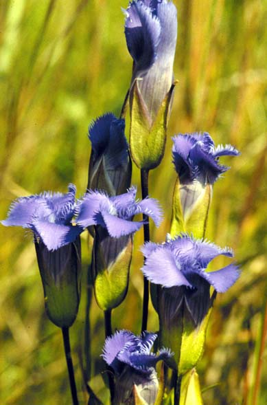
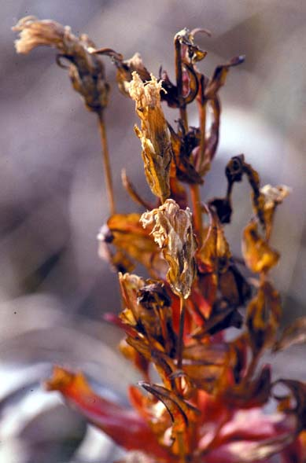

Gentiana Crinita
Family: Gentianaceae
Fringed Gentian
Swink/Wilhelm # 10

Click to view larger photo
FLOWERING: September/October to early November
SEED TIMING: Late October to early November
HABITAT: Moist prairie, banks and low woods
DIAGNOSTIC FEATURES: 1 to 3 feet high. Leaves opposite, ovate to lanceolate, rounded at base with pointed tip. Single, blue, delicately fringed flower opens in sun and closes at night. Biennial.
TO PICK: Entire plant looks withered. Seed capsule turns papery, light brown and splits open to release hundreds of tiny black seeds. Pick whole head after you have checked to make certain seeds are not still green.